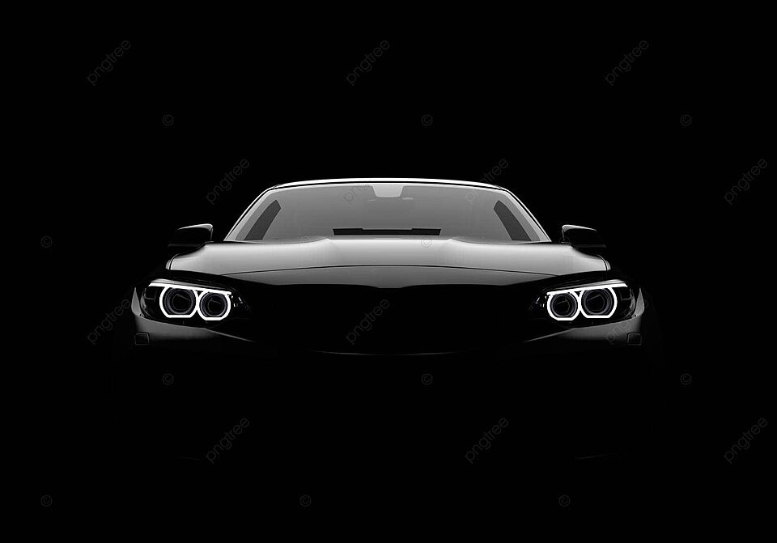

Pulido y Encerado
Devuelve el brillo original y la suavidad al acabado de tu vehículo. En Inter Car Detailing, realizamos un proceso completo de corrección de pintura que elimina rayas superficiales, marcas de lavado y oxidación, dejando una superficie perfectamente lisa y brillante. Finalizamos con un encerado profesional que sella y protege la pintura frente a los rayos UV, la suciedad y la humedad. Usamos productos de primera calidad para asegurar un brillo profundo, duradero y un acabado espejo que hará que tu auto luzca como nuevo.
Antes

Después